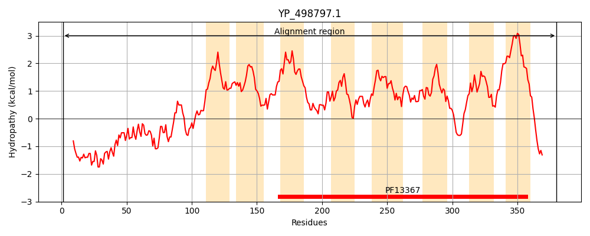
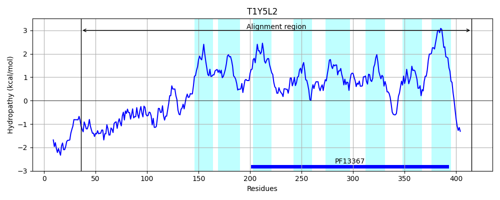
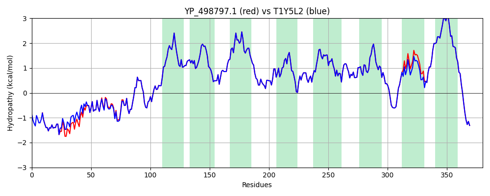

Hit Accession: T1Y5L2
Hit TCID: 9.B.217.1.2
Hit Description: gnl|BL_ORD_ID|20209 gnl|TC-DB|T1Y5L2|9.B.217.1.2 Putative membrane spanning protein OS=Staphylococcus aureus subsp. aureus CN1 GN=SAKOR_00211 PE=4 SV=1
Mach Len: 380
e:0.000000
Query TMS Count : 8
Hit TMS Count: 8
TMS-Overlap Score: 8.200000
Predicted Substrates:None
BLAST Alignment:
Score: 1893 , Bit scores: 733 bits, E-value: 0.0e+00, Alignment length: 380, Percentage identity: 99
Query: 1 MSSASTQSTKTSDIHNESIDKQMEAKAHETAQNTDLKNEARSLFDNATKSIGRLAGNDESLNLNLKDMLSEVFKPHTKNEADEIFIAGTAKTTPAICDISEEWGKPWLFSRVFIAFTVTFIGLWVMAAIFNNTNAIPGLIFIGALTVPLSGLFFFYESNAFKNISIFEVIIMFFIGGVFSLLSTMVLYRFVVFSDQFERFGSLTFFDAFLVGLVEETGKALIIVYFVNKLKTNKILNGLLIGAAIGAGFAVFESAGYILNFALGENVPLLDIVFTRAWTAIGGHLVWSAIVGAAIVIAKEQHGFEFKDIFDKRFLIFFLSAVVLHGIWDTSLTVLGSDTLKIFILIVIVWILVFILMGAGLKQVNLLQKEFKEQQKKVDE 380
MSSASTQSTKTSDIHNESI+KQMEAKAHETAQN DLK EARSLFDNATKSIGRLAGNDESLNLNLKDM SEVFKPHTKNEADEIFIAGTAKTTPAICDISEEWGKPWLFSRVFIAFTVTFIGLWVMAAIFNNTNAIPGLIFIGALTVPLSGLFFFYESNAFKNISIFEVIIMFFIGGVFSLLSTMVLYRFVVFSDQFERFGSLTFFDAFLVGLVEETGKALIIVYFVNKLKTNKILNGLLIGAAIGAGFAVFESAGYILNFALGENVPLLDIVFTRAWTAIGGHLVWSAIVGAAIVIAKEQHGFEFKDIFDKRFLIFFLSAV LHGIWDTSLTVLGSDTLKIFILIVIVWILVFILMGAGLKQVNLLQKEFKEQQKKVDE
Sbjct: 36 MSSASTQSTKTSDIHNESINKQMEAKAHETAQNADLKTEARSLFDNATKSIGRLAGNDESLNLNLKDMFSEVFKPHTKNEADEIFIAGTAKTTPAICDISEEWGKPWLFSRVFIAFTVTFIGLWVMAAIFNNTNAIPGLIFIGALTVPLSGLFFFYESNAFKNISIFEVIIMFFIGGVFSLLSTMVLYRFVVFSDQFERFGSLTFFDAFLVGLVEETGKALIIVYFVNKLKTNKILNGLLIGAAIGAGFAVFESAGYILNFALGENVPLLDIVFTRAWTAIGGHLVWSAIVGAAIVIAKEQHGFEFKDIFDKRFLIFFLSAVGLHGIWDTSLTVLGSDTLKIFILIVIVWILVFILMGAGLKQVNLLQKEFKEQQKKVDE 415 | Protein Hydropathy Plots: |
|---|
|  |  |
Pairwise Alignment-Hydropathy Plot:
|
|---|
|  |